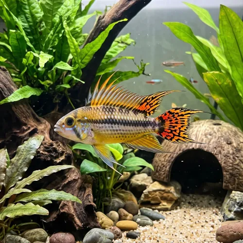

Nome popular principal
Apistogramma
Apistogramma, Apisto, Ciclídeo-Anão-Cacatua, Apistogramma Agassizii
Ficha de peixe
Ciclídeos Anões
Um pequeno ciclídeo repleto de cores e personalidade, perfeito para trazer elegância a aquários comunitários bem plantados.

Nome popular principal
Apistogramma, Apisto, Ciclídeo-Anão-Cacatua, Apistogramma Agassizii
Nome científico
Nome técnico essencial para taxonomia, cruzamento de manejo e referência editorial consistente.
Dificuldade de manejo
Use este nível como referência inicial, sempre considerando volume, estabilidade e compatibilidade do aquário.
Seção 1
Seção 2
Seções 4 a 6
Apistogramma tem hábito alimentar onívoro. Excelente. 1 a 2 vezes ao dia. Alimenta-se muito bem de rações afundantes de alta qualidade, além de suplementação com pequenos alimentos vivos ou congelados.
Machos são maiores e possuem nadadeiras mais longas e coloridas; fêmeas são menores e ficam amareladas no período reprodutivo. Tipo de reprodução: Ovíparo. Dificuldade de reprodução: Intermediário. A fêmea deposita os ovos no teto de cavernas escuras ou cascas de coco, assumindo um tom amarelo vivo para proteger a ninhada.
Alta. Substrato recomendado: Areia fina de rio com bastante tronco e cavernas. Necessidade de esconderijos: Alta. Prospera em aquários densamente plantados com troncos, folhiço no substrato e diversas cavernas para delimitação de território.
Seção 7
Exige água limpa, bem filtrada e levemente ácida para manter o sistema imunológico saudável e as cores vibrantes.
Seção 8
Um aquário a partir de 60 litros é ideal para abrigar um casal ou um pequeno harém com abrigo suficiente.
A fêmea adquire uma cor amarela muito brilhante e chamativa, passando a frequentar e defender uma toca ou caverna.
Não, é um ciclídeo anão muito dócil com outras espécies, demonstrando territorialismo apenas perto de seu refúgio.